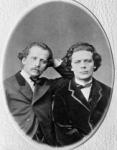
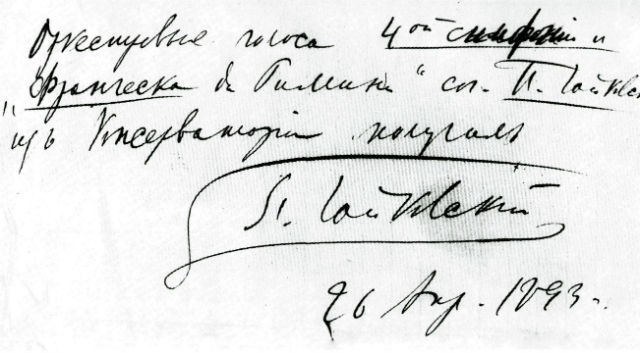
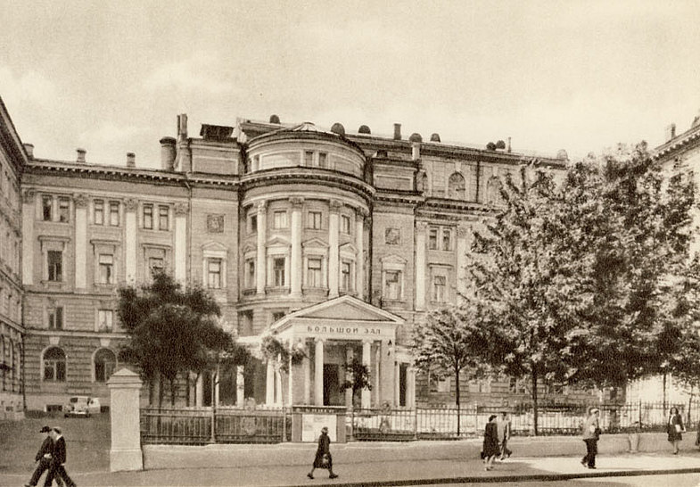
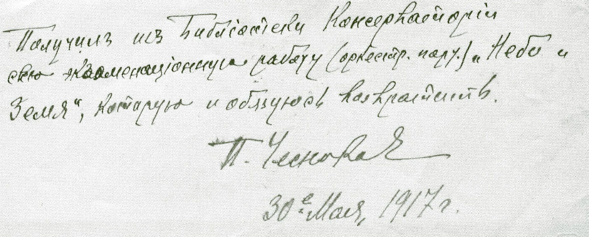

 К середине XIX столетия имена русских композиторов и исполнителей, таких как М.И. Глинка, А.С.Даргомыжский, братья А.Г. и Н.Г. Рубинштейны, вошли в круг имён европейски известных музыкантов, а Петербург стал одной из европейских музыкальных столиц. В это время возросла и активность московских музыкантов. Об этом свидетельствуют многочисленные концерты, которые регулярно проводились в стенах Московского университета. Практикуемое в то время частное музыкальное образование всё меньше удовлетворяло запросам просвещённого русского общества.
Московская пресса постоянно обращалась к теме необходимости радикальных перемен в образовании. После основания в 1859 г. в Петербурге Русского музыкального общества (с 1873 г. оно стало называться Императорским Русским музыкальным обществом) естественно возникла идея о создании Московского отделения РМО; в 1860 г. такое отделение было создано. Концерты РМО, проводимые в Большом и Малом залах Благородного собрания в Москве еженедельно, по субботам, вскоре стали популярными. Со временем концерты Общества стали анонсировать в печати; там же давались сведения о тех или иных исполнителях. Усилия Московского отделения РМО и его вдохновенного руководителя Н.Г. Рубинштейна, предпринятые на ниве музыкального просвещения, высоко оценивали современники: «С малыми средствами, в короткое время он учредил музыкальные классы, зародыш настоящей консерватории; он основал музыкальное общество, уже призывающее всю образованную Москву на разнообразные концерты; он устроил квартетные утра.
Мало того, он пригласил всех москвичей на общедоступные музыкальные праздники в громадном Экзерцисгаузе, где все сословия, все состояния за ничтожную плату ... уже начали знакомиться с образцовыми произведениями музыкальных гениев. Он не только превосходный музыкант,  что встречается часто, - но ... он ешё вполне полезный гражданин, что встречается гораздо реже» (Соппогуб В. Артистические вечера в Москве: Письмо Матв. Юр. Виельгорскому // Моск. ведомости. 1865. 10 марта (NQ 5З).
«Вскоре при РМО были открыты музыкальные классы, в работе которых участвовали Э.Л Лангер, Н.Д. Кашкин, К.К.. Альбрехт. Преподавание было немыслимо без необходимых нот. И уже в отчёте РМО за 1860/61 г. появляется упоминание: «Приход. < ... > Пожертвовано несколько пиес для оркестра с партитурами В.И. Мамонтовым и Ф.В. Перловым» ( Отчёт Русского музыкального общества за 1860-1861 год. Спб., 1862. С. 42.) «Возникает мысль о подыскании помещения для библиотеки, и дирекция Общества снимает, за 250 рублей в год, в новом магазине Петра Ивановича Юргенсона (на углу Столешникова переулка и Большой Дмитровки) комнату для своей конторы, куда помещает и скопившиеся ноты и книги. С 1861 /62 концертного года по 1867 / 68 Общество оплачивает библиотекаря». (Медведева М.И. История бибпиотеки Московской консерватории: Машинопись. М., 1946. С. 3 // Архив НМБТ).